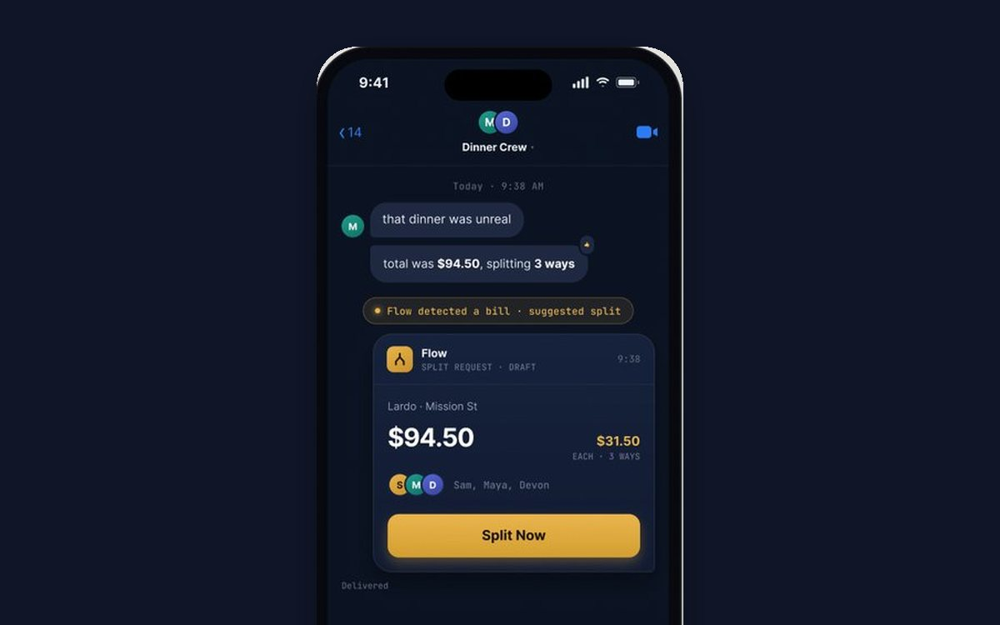
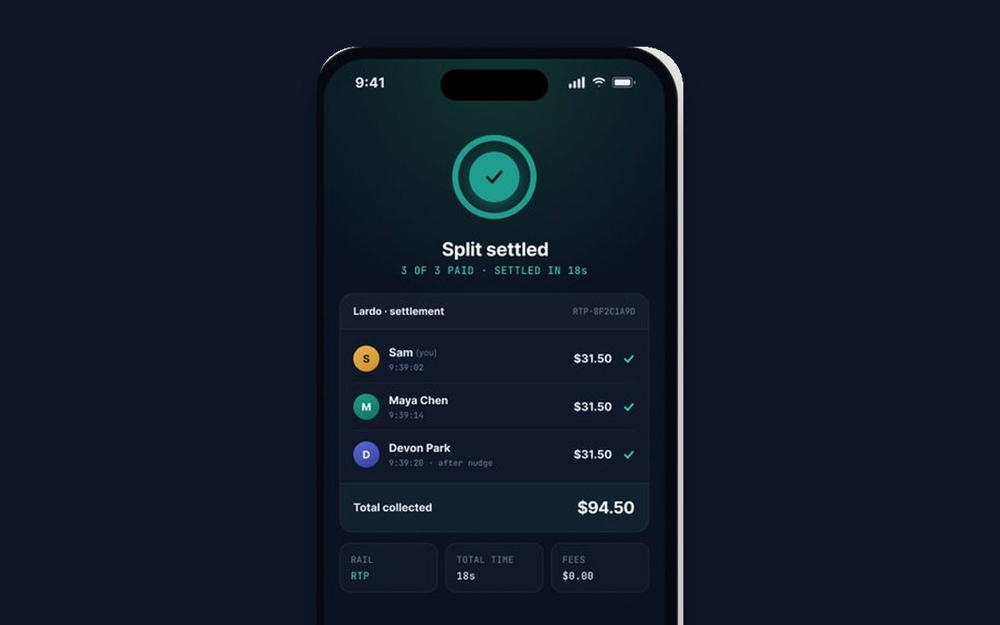
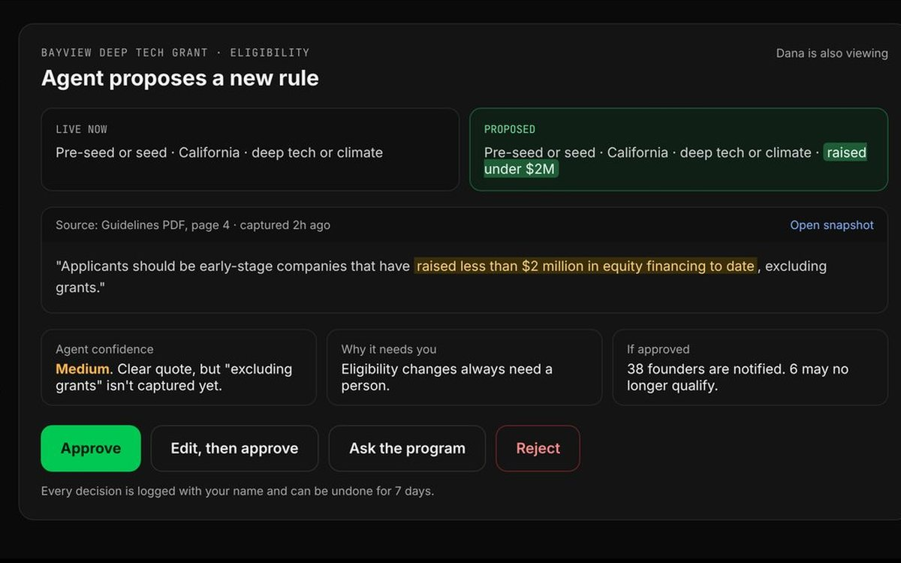
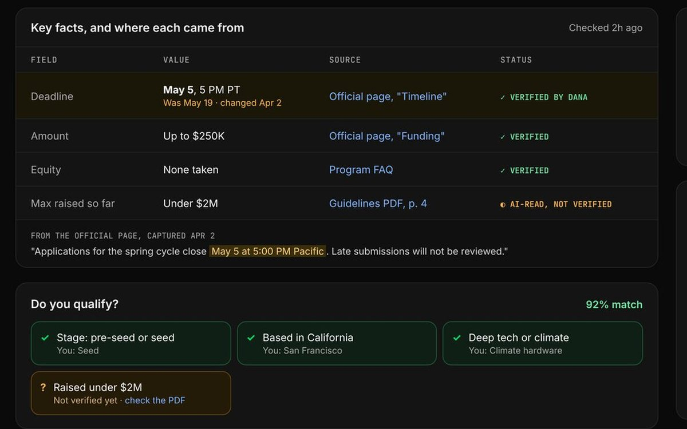
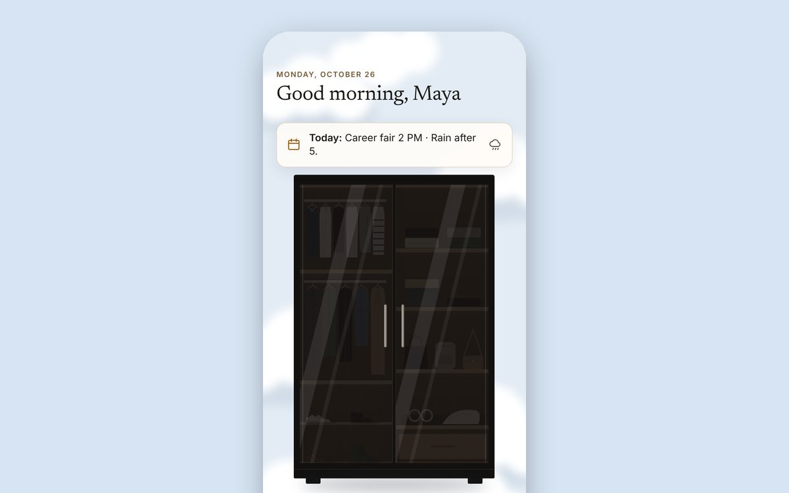
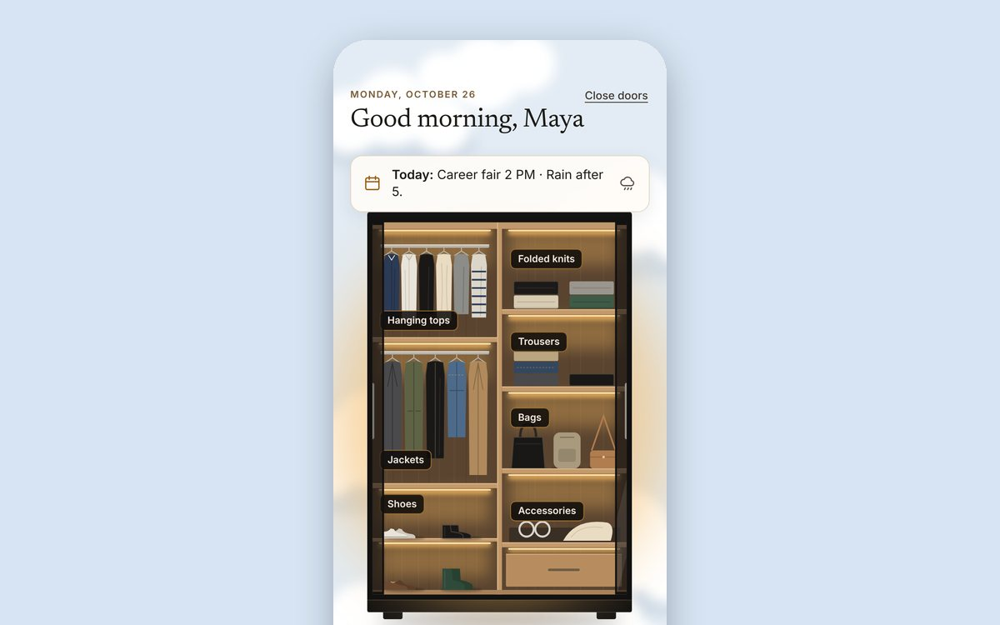
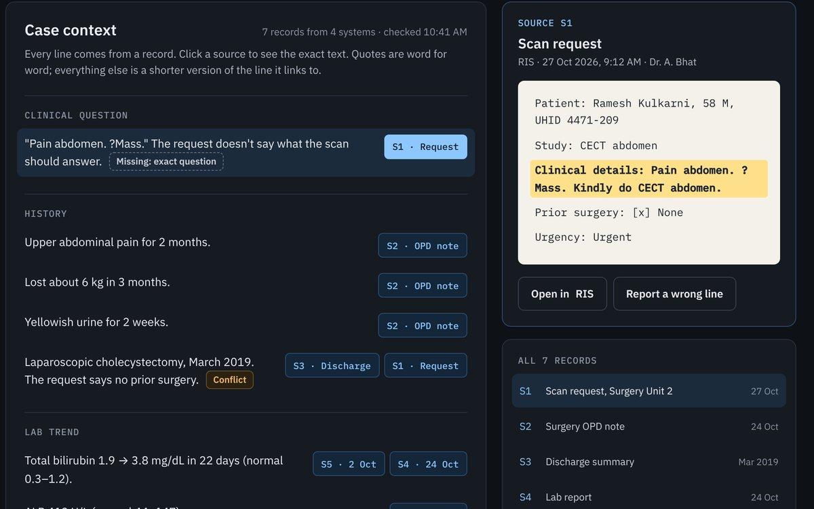
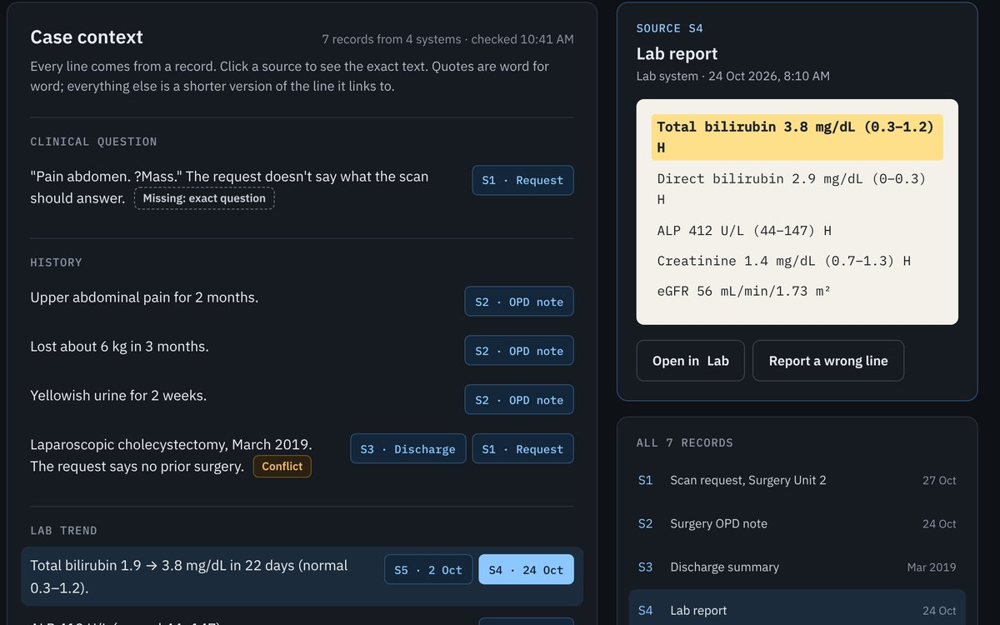

Product designer · Human-centered AI
I design AI that people can check, correct and trust.
I'm Priyanshu Nada, a Computer Science senior at San Francisco State. I take products from research and Figma flows all the way to working React prototypes, and lately I've been focused on AI that shows where its answers come from.
- Based in
- San Francisco, CA
- Open to
- Product design, AI/UX and design technologist roles
- Graduating
- B.S. Computer Science, May 2027
Selected work
Four projects about giving people the right information at the moment they decide.
Each card plays its project's key moment. The case studies show the research, the decisions and what isn't built yet.


Flow: banking that disappears
AI money tools for Gen Z that show up inside iMessage at the moment someone is about to spend.


Capstack: funding data founders can trust
A funding directory kept current by an AI agent, with a person approving anything that could cost a founder a deadline.


Closet: an outfit in one glance
An AI wardrobe for busy students that picks outfits from clothes they own and explains every pick.


Groundwork: the patient’s story before the scan
A context assistant for radiologists that links every line to its source record and never suggests a diagnosis.
Tip: press 1 to 4 to jump to a case study.
In progress
What I'm building now.
Three projects on the same idea: AI you can check before you act on it. Each one goes up here with its prototype, evaluation and limits once it's finished.
About
I came to design through code, and I still build what I design.
Most of my projects start in Figma and end as working software, because that's where the real problems show up: the empty state nobody drew, the score nobody can explain, the error with no way out.
I also work the front desk at SF State's Center for Global Engagement, helping more than 200 international students with applications, housing and onboarding. Watching people get stuck in forms and email threads every week is a big part of why I care about clear systems.
Right now I'm learning to design for AI specifically: answers that show their sources, agents that ask before they act, and interfaces that work without a mouse.
- Design
- Figma (components, variants, prototyping), interaction design, information architecture, journey maps
- Research
- Usability testing, heuristic evaluation, personas, surveys in Qualtrics, Maze
- Build
- React, JavaScript, HTML/CSS, Python, Git
- Learning now
- LLM APIs, tool calling, evaluation sets, WCAG 2.2
- Education
- B.S. Computer Science, San Francisco State, May 2027 · Dean's List
- Certifications
- IxDF Master Classes: Human-Centered Design for AI · AI for Design Systems, 2026
Google UX Design Certificate, 2025
How I work
Four rules I keep coming back to.
- Start at the decision.Find the exact moment someone needs help, then design backward from there.
- Go where people already are.Put help inside tools people already use before asking them to learn a new one.
- Show, then step back.Give the answer and the choice, then get out of the way.
- Make it checkable.Show sources and reasons, so people can catch a wrong answer instead of just accepting it.
Process
- Research
- Flows in Figma
- Working prototype
- Test with people
- Fix and repeat
Contact
Let's talk.
I'm open to product design, AI/UX and design technologist roles and internships. The fastest way to reach me is email.